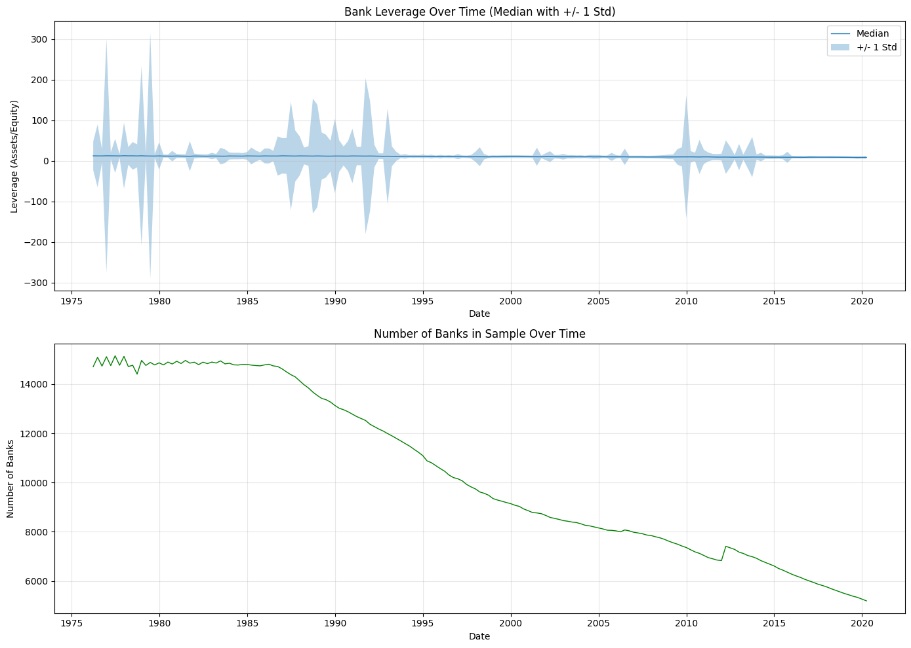
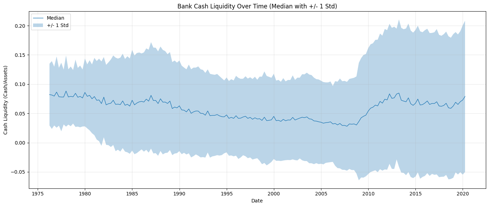
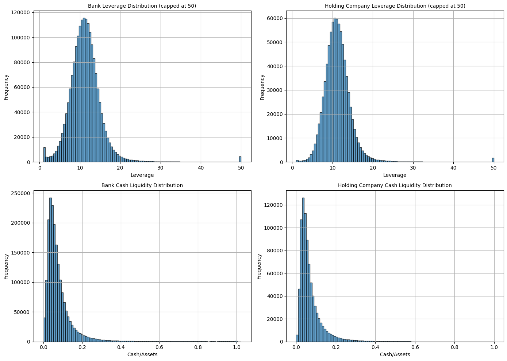

NYU Call Report Data#
This notebook provides summary statistics and visualizations for the NYU Call Report data containing bank-level leverage and liquidity metrics.
Data Source#
Data is publicly available from NYU Stern.
import pandas as pd
import matplotlib.pyplot as plt
import seaborn as sns
import warnings
import chartbook
BASE_DIR = chartbook.env.get_project_root()
DATA_DIR = BASE_DIR / "_data"
warnings.filterwarnings("ignore")
Load the Datasets#
We have four datasets:
Bank Leverage: Total assets / Total equity at individual bank level
Holding Company Leverage: Aggregated at bank holding company level
Bank Cash Liquidity: Cash / Total assets at individual bank level
Holding Company Cash Liquidity: Aggregated at holding company level
# Load leverage data
leverage_df = pd.read_parquet(DATA_DIR / "ftsfr_nyu_call_report_leverage.parquet")
print(f"Bank Leverage shape: {leverage_df.shape}")
leverage_df.head()
Bank Leverage shape: (1849957, 3)
| unique_id | ds | y | |
|---|---|---|---|
| 0 | 1000052 | 1976-03-31 | 8.856413 |
| 1 | 1000052 | 1976-06-30 | 9.201939 |
| 2 | 1000052 | 1976-09-30 | 9.166934 |
| 3 | 1000052 | 1976-12-31 | 8.878299 |
| 4 | 1000052 | 1977-03-31 | 9.032551 |
# Load holding company leverage
hc_leverage_df = pd.read_parquet(DATA_DIR / "ftsfr_nyu_call_report_holding_company_leverage.parquet")
print(f"Holding Company Leverage shape: {hc_leverage_df.shape}")
hc_leverage_df.head()
Holding Company Leverage shape: (831858, 3)
| unique_id | ds | y | |
|---|---|---|---|
| 0 | 1020199 | 1976-03-31 | 14.093732 |
| 1 | 1020199 | 1976-06-30 | 14.051833 |
| 2 | 1020199 | 1976-09-30 | 14.241946 |
| 3 | 1020199 | 1976-12-31 | 13.976336 |
| 4 | 1020199 | 1977-03-31 | 14.077098 |
# Load cash liquidity data
cash_df = pd.read_parquet(DATA_DIR / "ftsfr_nyu_call_report_cash_liquidity.parquet")
print(f"Bank Cash Liquidity shape: {cash_df.shape}")
cash_df.head()
Bank Cash Liquidity shape: (1906765, 3)
| unique_id | ds | y | |
|---|---|---|---|
| 0 | 1000052 | 1976-03-31 | 0.063697 |
| 1 | 1000052 | 1976-06-30 | 0.090671 |
| 2 | 1000052 | 1976-09-30 | 0.067859 |
| 3 | 1000052 | 1976-12-31 | 0.055985 |
| 4 | 1000052 | 1977-03-31 | 0.047882 |
# Load holding company cash liquidity
hc_cash_df = pd.read_parquet(DATA_DIR / "ftsfr_nyu_call_report_holding_company_cash_liquidity.parquet")
print(f"Holding Company Cash Liquidity shape: {hc_cash_df.shape}")
hc_cash_df.head()
Holding Company Cash Liquidity shape: (832902, 3)
| unique_id | ds | y | |
|---|---|---|---|
| 0 | 1020199 | 1976-03-31 | 0.076872 |
| 1 | 1020199 | 1976-06-30 | 0.075154 |
| 2 | 1020199 | 1976-09-30 | 0.076814 |
| 3 | 1020199 | 1976-12-31 | 0.087926 |
| 4 | 1020199 | 1977-03-31 | 0.074970 |
Summary Statistics - Bank Leverage#
# Summary statistics for leverage
print("Bank Leverage Summary:")
print(f" Number of unique banks: {leverage_df['unique_id'].nunique()}")
print(f" Date range: {leverage_df['ds'].min()} to {leverage_df['ds'].max()}")
print(f" Observations: {len(leverage_df)}")
print(f"\nLeverage Statistics:")
print(leverage_df['y'].describe())
Bank Leverage Summary:
Number of unique banks: 22965
Date range: 1976-03-31 00:00:00 to 2020-03-31 00:00:00
Observations: 1849957
Leverage Statistics:
count 1.849957e+06
mean 1.186239e+01
std 5.753955e+01
min 9.527121e-01
25% 9.015023e+00
50% 1.112117e+01
75% 1.325725e+01
max 3.652707e+04
Name: y, dtype: float64
Time Series - Aggregate Leverage#
Cross-sectional median leverage over time.
# Calculate aggregate statistics over time
leverage_ts = leverage_df.groupby('ds')['y'].agg(['median', 'mean', 'std', 'count'])
leverage_ts.columns = ['median', 'mean', 'std', 'count']
fig, axes = plt.subplots(2, 1, figsize=(14, 10))
# Median leverage over time
ax = axes[0]
ax.plot(leverage_ts.index, leverage_ts['median'], linewidth=1, label='Median')
ax.fill_between(leverage_ts.index,
leverage_ts['median'] - leverage_ts['std'],
leverage_ts['median'] + leverage_ts['std'],
alpha=0.3, label='+/- 1 Std')
ax.set_title('Bank Leverage Over Time (Median with +/- 1 Std)', fontsize=12)
ax.set_xlabel('Date')
ax.set_ylabel('Leverage (Assets/Equity)')
ax.legend()
ax.grid(True, alpha=0.3)
# Number of banks over time
ax = axes[1]
ax.plot(leverage_ts.index, leverage_ts['count'], linewidth=1, color='green')
ax.set_title('Number of Banks in Sample Over Time', fontsize=12)
ax.set_xlabel('Date')
ax.set_ylabel('Number of Banks')
ax.grid(True, alpha=0.3)
plt.tight_layout()
plt.show()

Summary Statistics - Cash Liquidity#
# Summary statistics for cash liquidity
print("Bank Cash Liquidity Summary:")
print(f" Number of unique banks: {cash_df['unique_id'].nunique()}")
print(f" Date range: {cash_df['ds'].min()} to {cash_df['ds'].max()}")
print(f" Observations: {len(cash_df)}")
print(f"\nCash Liquidity Statistics:")
print(cash_df['y'].describe())
Bank Cash Liquidity Summary:
Number of unique banks: 23862
Date range: 1976-03-31 00:00:00 to 2020-03-31 00:00:00
Observations: 1906765
Cash Liquidity Statistics:
count 1.906765e+06
mean 7.975783e-02
std 8.387512e-02
min 0.000000e+00
25% 3.609660e-02
50% 5.780421e-02
75% 9.358769e-02
max 1.023094e+00
Name: y, dtype: float64
Time Series - Aggregate Cash Liquidity#
# Calculate aggregate statistics over time
cash_ts = cash_df.groupby('ds')['y'].agg(['median', 'mean', 'std'])
fig, ax = plt.subplots(figsize=(14, 6))
ax.plot(cash_ts.index, cash_ts['median'], linewidth=1, label='Median')
ax.fill_between(cash_ts.index,
cash_ts['median'] - cash_ts['std'],
cash_ts['median'] + cash_ts['std'],
alpha=0.3, label='+/- 1 Std')
ax.set_title('Bank Cash Liquidity Over Time (Median with +/- 1 Std)', fontsize=12)
ax.set_xlabel('Date')
ax.set_ylabel('Cash Liquidity (Cash/Assets)')
ax.legend()
ax.grid(True, alpha=0.3)
plt.tight_layout()
plt.show()

Distribution Analysis#
fig, axes = plt.subplots(2, 2, figsize=(14, 10))
# Bank leverage distribution
ax = axes[0, 0]
leverage_df['y'].clip(upper=50).hist(ax=ax, bins=100, edgecolor='black', alpha=0.7)
ax.set_title('Bank Leverage Distribution (capped at 50)', fontsize=10)
ax.set_xlabel('Leverage')
ax.set_ylabel('Frequency')
# Holding company leverage distribution
ax = axes[0, 1]
hc_leverage_df['y'].clip(upper=50).hist(ax=ax, bins=100, edgecolor='black', alpha=0.7)
ax.set_title('Holding Company Leverage Distribution (capped at 50)', fontsize=10)
ax.set_xlabel('Leverage')
ax.set_ylabel('Frequency')
# Bank cash liquidity distribution
ax = axes[1, 0]
cash_df['y'].hist(ax=ax, bins=100, edgecolor='black', alpha=0.7)
ax.set_title('Bank Cash Liquidity Distribution', fontsize=10)
ax.set_xlabel('Cash/Assets')
ax.set_ylabel('Frequency')
# Holding company cash liquidity distribution
ax = axes[1, 1]
hc_cash_df['y'].hist(ax=ax, bins=100, edgecolor='black', alpha=0.7)
ax.set_title('Holding Company Cash Liquidity Distribution', fontsize=10)
ax.set_xlabel('Cash/Assets')
ax.set_ylabel('Frequency')
plt.tight_layout()
plt.show()

Summary#
This dataset provides quarterly bank-level and holding company-level metrics from regulatory call reports (1976-2020). Key metrics include:
Leverage: Total Assets / Total Equity - measures bank capital structure
Cash Liquidity: Cash / Total Assets - measures liquid asset holdings
These metrics are widely used in:
Banking regulation and stress testing
Financial stability monitoring
Academic research on bank behavior and risk